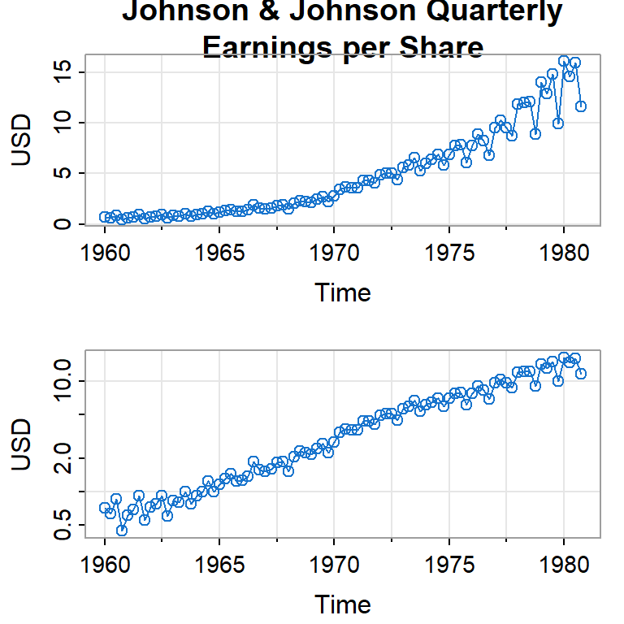
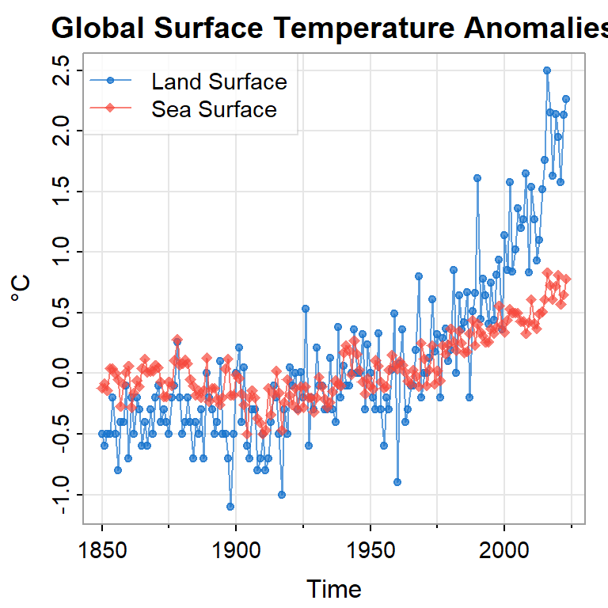
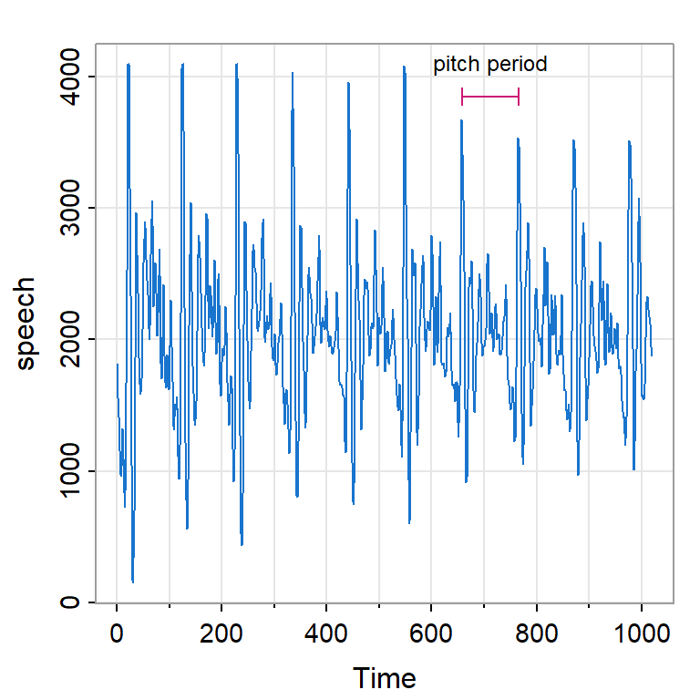
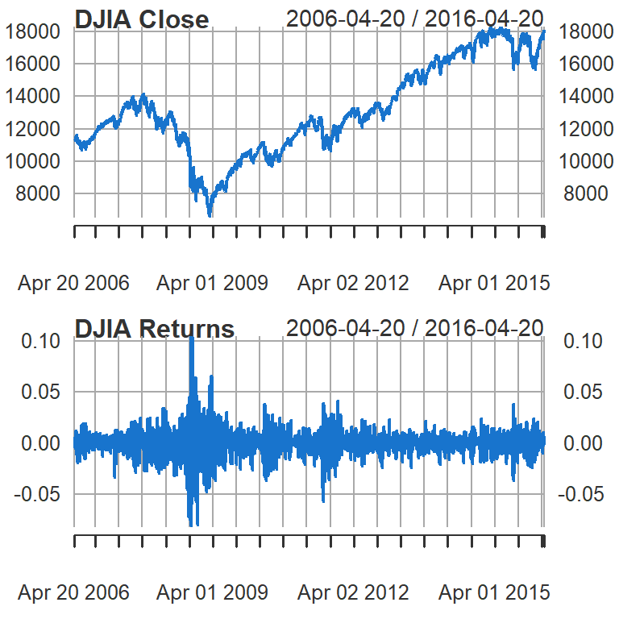
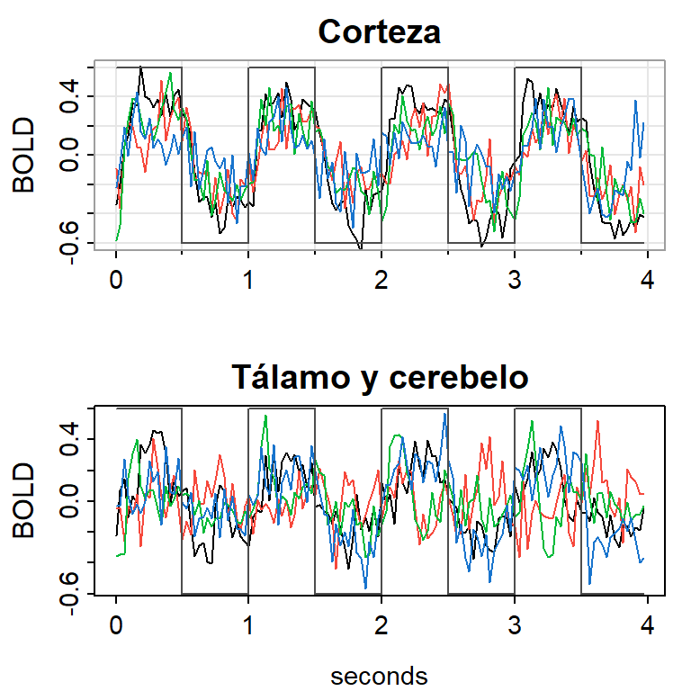
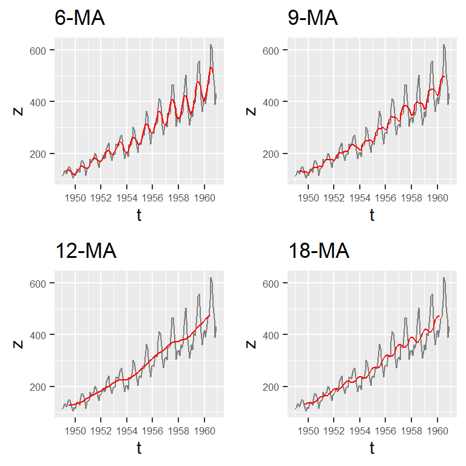
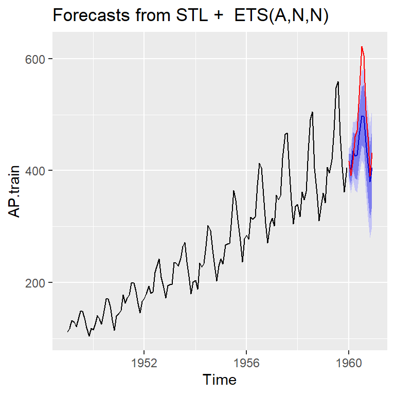

Tema 1: Introducción al análisis de series temporales
![]()
Paquetes de R
Para este tema, se necesita cargar estos paquetes:
Consideraciones generales
Contenido
Consideraciones generales
Objetivos del análisis de series temporales
Descomposición de series temporales
Evaluación de los pronósticos
Creación de documentos y reportes usando Quarto
Consideraciones generales
Una serie temporal (serie cronológica o serie de tiempo) es una colección de datos recolectados a lo largo del tiempo.
Ejemplos:
- Economía:
- Exportaciones, ventas, tipo de cambio, bolsa de valores.
- Salud:
- Número de casos de una enfermedad, electrocardiograma de un paciente.
- Meteorología:
- Precipitación, temperatura
- Contaminación de una cierta partícula.
- Promedio anual de manchas solares
- Demografía:
- Mortalidad, natalidad.
- Economía:
Series temporales continuas y discretas
Una series temporal es:
Continua: si las observaciones de la serie se registran para todo tiempo \(t\) en un intervalo de tiempo.
- Registro continuo de la temperatura.
- Registro continuo de marea en Puntarenas.
Discreta: si las observaciones de la serie se registran sólo en momentos particulares. Puede ser equiespaciadas o no.
- Precipitación anual en San José.
- Número diario de casos nuevos de COVID19.
- El muestreo de una serie continua realizado en intervalos de tiempo iguales, \(\Delta t\), en un intervalo de tiempo \([0,T]\) produce una serie discreta equiespaciada de \(N=\frac{T}{\Delta t}\) puntos.
- Temperatura medida en cada hora.
- Otro caso es cuando se toma el valor de la serie acumulando (o agregando) valores en intervalos de tiempos iguales.
- Temperatura promedio de cada hora en una estación atmosférica.
- Precipitación mensual en un área específica.
- Ejemplos de la diapositiva 4:
- ¿Cuáles son discretas y cuáles son continuas?
- En este curso, enfocamos en series discretas equiespaciadas.
Ejemplos




Imagen por resonancia magnética
- Un estímulo fue aplicado a cinco personas en la mano por 32 segundos y luego paró el estímulo por otros 32 segundos, sucesivamente.
- Durante 256 segundos, cada 2 segundos se registró la intensidad del dependiente del nivel en la sangre (BOLD, blood oxygenation-level dependent signal intensity), la cual mide áreas de activación en el celebro \((T=128)\).

Objetivos del análisis de series temporales
Contenido
Consideraciones generales
Objetivos del análisis de series temporales
Descomposición de series temporales
Evaluación de los pronósticos
Creación de documentos y reportes usando Quarto
Objetivos del análisis de series temporales
- Descripción:
- Describir por medio de gráficos o modelos el fenómeno.
- Descubrir características como tendencias, ciclos, estacionalidad (crecimiento, decrecimiento, periodicidad, cambios bruscos, valores extremos).
- Modelación:
- Investigar el mecanismo que genera la serie temporal.
- Permite simular o generar posibles escenarios con condiciones estrictas.
- Pronósticos:
- Pronosticar o predecir valores de una serie en el futuro. Puede ser a corto plazo (series de ventas y de producción) o largo plazo (series de población, series relacionadas al calendamiento global, etc.).
Nota
Para un problema dado, puede combinar diferentes objetivos.
- Control de procesos (mantener en control una cierta variable en el tiempo)
- Ventas (predicción correcta de cierto producto)
- Meteorología (precipitación, temperatura)
Notación
- Una serie temporal observada \(X_t\), desde tiempo \(1\) hasta tiempo \(T\) se denota como
\[X_{1},..., X_{T}.\]
Nota
- Considere una serie temporal como una secuencia de variables aleatorias
\[X_1,X_2,..,X_t,...\]
Como las observaciones no son independientes, la inferencia estadística tradicional no es aplicable en este contexto y se requieren otros enfoques.
Proceso estocástico: una colección de variables aleatorias indexada por un conjunto \(\mathcal{T}\), \[\left\lbrace X_t, t \in \mathcal{T} \right\rbrace\]
Vamos a enfocar el caso cuando \(\mathcal{T}\) es un conjunto discreto, i.e. \(t=0,1,2,...\).
Descomposición de series temporales
Contenido
Consideraciones generales
Objetivos del análisis de series temporales
Descomposición de series temporales
Evaluación de los pronósticos
Creación de documentos y reportes usando Quarto
Descomposición de series temporales
Existe varios componentes en el comportamiento de series temporales:
- Tendencia: comportamiento creciente o decreciente en largo plazo. Ej: crecimiento de población, ingresos por ventas.
- Estacionalidad: patrón o variaciones afectadas por repetición de una frecuencia dada (ej. semana, mes y año.). Consecuencia de cambios climáticos, comportamiento de la gente en el tiempo. Ej: venta de productos que dependen de la temporada, temperatura, pasajes de avión.
- Ciclo: cuando los datos muestran subidas y bajadas de largo plazo, generalmente con frecuencia desconocida. Ej: ciclo económico, período de prosperidad alternando con período de recesión.
- Movimiento irregular o error: variaciones en la serie que no siguen ningún patrón regular. Es el residuo que queda en una serie después de eliminar los componentes anteriores (tendencia-ciclo y estacionalidad).
Ejemplos
La base de datos AirPassenger en R proporciona total de pasajeros mensuales de una aerolínea estadounidense de 1949 a 1960.
[1] "ts" Jan Feb Mar Apr May Jun
1949 112 118 132 129 121 135 [1] 112 118 132 129 121 135 148 148 136 119 104 118 115 126 141 135 125 149
[19] 170 170 158 133 114 140 145 150 178 163 172 178 199 199 184 162 146 166
[37] 171 180 193 181 183 218 230 242 209 191 172 194 196 196 236 235 229 243
[55] 264 272 237 211 180 201 204 188 235 227 234 264 302 293 259 229 203 229
[73] 242 233 267 269 270 315 364 347 312 274 237 278 284 277 317 313 318 374
[91] 413 405 355 306 271 306 315 301 356 348 355 422 465 467 404 347 305 336
[109] 340 318 362 348 363 435 491 505 404 359 310 337 360 342 406 396 420 472
[127] 548 559 463 407 362 405 417 391 419 461 472 535 622 606 508 461 390 432La base de datos fpp2::ausbeer: producción trimestral total de cerveza en Australia (en megalitros) desde el primer trimestre de 1956 hasta el segundo trimestre de 2010.
Medias móviles
El primer paso en una descomposición clásica es utilizar un método de media móvil para estimar el ciclo de tendencia.
Sea \(X_t\) una serie de interés. Una media móvil de orden \(m\) se puede escribir como: \[\begin{equation} MA_{t} = \frac{1}{m} \sum_{j=-k}^k X_{t+j}, \end{equation}\] donde \(m = 2k+1\) es impar1.
La estimación de tendencia-ciclo en el momento \(t\) se obtiene promediando los valores de la serie temporal dentro de \(k\) períodos de \(t\).
El promedio elimina parte de la aleatoriedad de los datos, dejando un componente tendencia-ciclo uniforme, es decir suaviza la serie original. A esto se le llama \(m\)-MA, que significa media móvil de orden \(m\).
AirPassengers ma(AirPassengers, 3) ma(AirPassengers, 5)
Jan 1949 112 NA NA
Feb 1949 118 120.6667 NA
Mar 1949 132 126.3333 122.4
Apr 1949 129 127.3333 127.0
May 1949 121 128.3333 133.0
Jun 1949 135 134.6667 136.2
Jul 1949 148 143.6667 137.6
Aug 1949 148 144.0000 137.2
Sep 1949 136 134.3333 131.0
Oct 1949 119 119.6667 125.0 AirPassengers ma(AirPassengers, 3) ma(AirPassengers, 5)
Mar 1960 419 423.6667 432.0
Apr 1960 461 450.6667 455.6
May 1960 472 489.3333 501.8
Jun 1960 535 543.0000 539.2
Jul 1960 622 587.6667 548.6
Aug 1960 606 578.6667 546.4
Sep 1960 508 525.0000 517.4
Oct 1960 461 453.0000 479.4
Nov 1960 390 427.6667 NA
Dec 1960 432 NA NA
Figura 6: Diferentes medias móviles aplicado a los datos de pasajeros
Descomposición Clásica
- Modelo aditivo
\[X_{t} = T_{t} + S_{t} + I_t,\]
- Modelo multiplicativo
\[X_{t} = T_{t} \times S_{t} \times I_t,\] donde:
\(X_t\): el valor de la serie \(Z\) en el tiempo \(t\),
\(T_t\): componente tendencia-ciclo en el tiempo \(t\).
\(S_t\): componente estacional en el tiempo \(t\).
\(I_t\): componente irregular, aleatorio en el tiempo \(t\).
Nota
La descomposicion aditiva es la más apropiada si la magnitud de las fluctuaciones o la variación alrededor del tendencia-ciclo no varía con el nivel de la serie de tiempo.
La descomposición multiplicativa se usa cuando la variación en el patrón estacional o la variación alrededor de tendencia-ciclo, parece ser proporcional al nivel de la serie de tiempo. Es común ver esto en las series del ámbito económico.
Utilizando la transformación logarítmica en una serie de datos, el modelo multiplicativo se convierte en un modelo aditivo. (Esto equivale a estabilizar la variabilidad a lo largo del tiempo) \[X_t=T_t \times S_t \times I_t\] es equivalente a \[\log X_t = \log T_t + \log S_t + \log I_t.\]
Ejemplo de los Pasajeros mensuales
- Recordemos del ejemplo de pasajeros mensuales.

- La descomposición consiste en descomponer la serie en diferentes componentes.
Descomposición STL
- Propuesto por Cleveland et al. (1990)
- Seasonal and trend descomposition using loess (en inglés).
- LOESS (locally weighted smoothing), también llamado LOWESS (Locally Weighted Scatterplot Smoothing), es una técnica de regresión no lineal.
- Localmente ajusta regresión lineal y crea una curva suave en el tiempo para estimar la tendencia.
- Ventajas:
- el componente estacional puede variar en el tiempo.
- permite el control del grado de suavizamiento.
- es robusto a los outliers.
Evaluación de los pronósticos
Contenido
Consideraciones generales
Objetivos del análisis de series temporales
Descomposición de series temporales
Evaluación de los pronósticos
Creación de documentos y reportes usando Quarto
Evaluación de los pronósticos de un modelo
Sean \(X_1,...,X_T\) las observaciones y \(\hat{X}_1,...,\hat{X}_T\) los valores ajustados de un modelo particular.
Defina el error de pronóstico \[e_t=X_t- \hat{X}_t\] Algunas consideraciones:
¿Son correlacionados?
¿Tienen media cero?
¿Variancia constante?
¿Tienen distribución normal?
Medidas de precisión
Suponga que se tiene una serie \(X_t\) de \(T\) observaciones.
Dividir las observaciones en \(X_1,...,X_{T-1}\) y \(X_{T}\).
Ajustar el modelo con \(X_1,...,X_{T-1}\) y pronosticar el valor de \(\hat{X}_{T}\).
El error de pronóstico es definido por \[e_T=X_T- \hat{X}_T\]
\(\hat{X}_{T}\) es llamado pronóstico un paso para adelante.
\(e_{T}\) es llamado error de pronóstico un paso para adelante.
En la práctica, se divide la serie \(X_t\), \(t=1,...,T\) en dos conjuntos:
- Base de datos de entrenamiento \(X_1,...,X_{T'}\) (para ajustar el modelo)
- Base de datos de prueba \(X_{T'+1},...,X_{T'+h}\) (para validar el modelo)
donde \(1< T'< T\). Usualmente \(h/T \approx 0.2\) o \(0.1\).
- Ajustar el modelo con \(X_1,...,X_{T'}\) y pronosticar los valores de \(\hat{X}_{T'+1},...,\hat{X}_{T'+h}\) (pronóstico a \(h\) paso para adelante).
- Definan las siguientes medidas:
- Error absoluto medio (mean absolute error, MAE) \[\operatorname{MAE} = \frac{\sum\limits_{i=1}^h |e_{T+i}|}{h}\]
Error cuadrático medio (mean squared error, MSE) \[\operatorname{MSE} = \frac{\sum\limits_{i=1}^h (e_{T+i})^2}{h}\]
Error porcentual absoluto medio (mean absolute percentage error, MAPE) \[\operatorname{MAPE} = \frac{\sum\limits_{i=1}^h |EP_{T+i}|}{h}\] donde \(EP_{j}=100 \left[ \frac{X_j-\hat{X_j}}{X_j} \right]\).
- Pronósticos con STL.

- Precisión con training set.
ME RMSE MAE MPE MAPE MASE ACF1
Training set 2.258201 15.28285 11.56855 0.9344181 5.058835 0.3799194 0.1792363[1] 15.28285[1] 11.56855[1] 5.058835- Precisión con testing set.
ME RMSE MAE MPE MAPE MASE ACF1
Training set 2.258201 15.28285 11.56855 0.9344181 5.058835 0.3799194 0.1792363
Test set 41.990584 59.38048 46.58364 7.7756153 8.903944 1.5298405 0.6960642
Theil's U
Training set NA
Test set 1.051162[1] 59.38048[1] 46.58364[1] 8.903944Creación de documentos y reportes usando Quarto
Contenido
Consideraciones generales
Objetivos del análisis de series temporales
Descomposición de series temporales
Evaluación de los pronósticos
Creación de documentos y reportes usando Quarto
Creación de documentos y reportes usando Quarto
- Es un sistema que unifica los códigos, resultados y la redacción del autor, para producir presentaciones, informes, reportes, libros (y otros) con diversos formatos como html, PDF, Word, etc.
- Comunicación de resultados estadísticos.
- El proceso es reproducible, por lo que facilita la colaboración con otras personas.
Más detalles ver: https://quarto.org/

Diagrama de Quarto